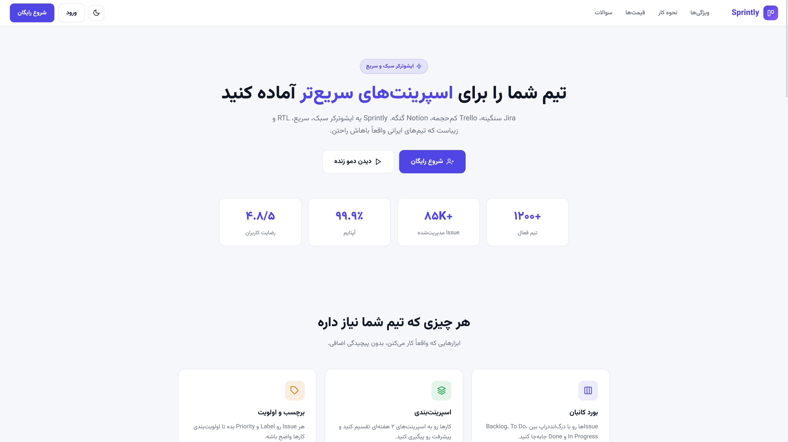
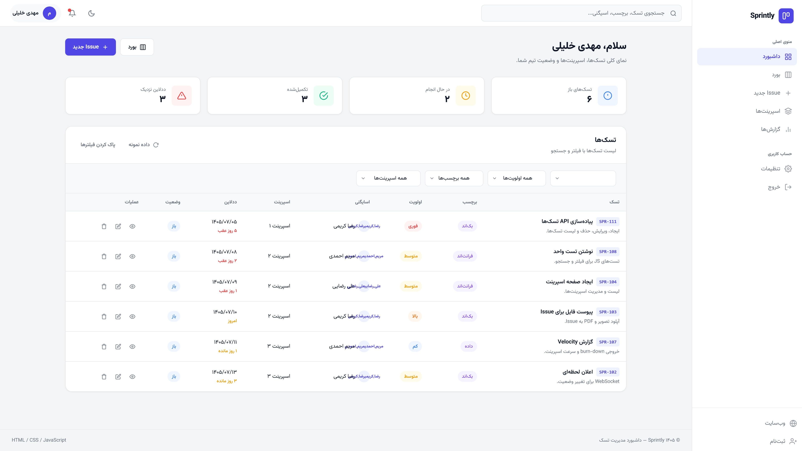
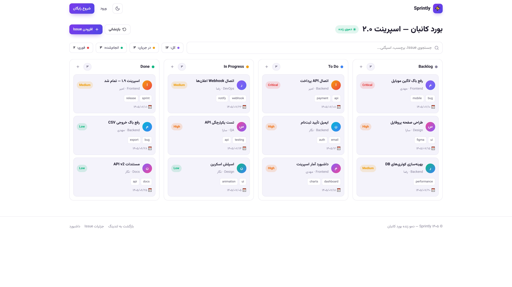

ورودی یکپارچه با دسترسی سریع به کل بخشهای پلتفرم، بدون لایههای اضافی.

نمایش لحظهای شاخصهای کلیدی و گزارشهای تحلیلی برای تصمیمگیری آگاهانه.

مدیریت بصری چرخهی حیات وظایف با قابلیت ردیابی وضعیت هر پروژه در لحظه.